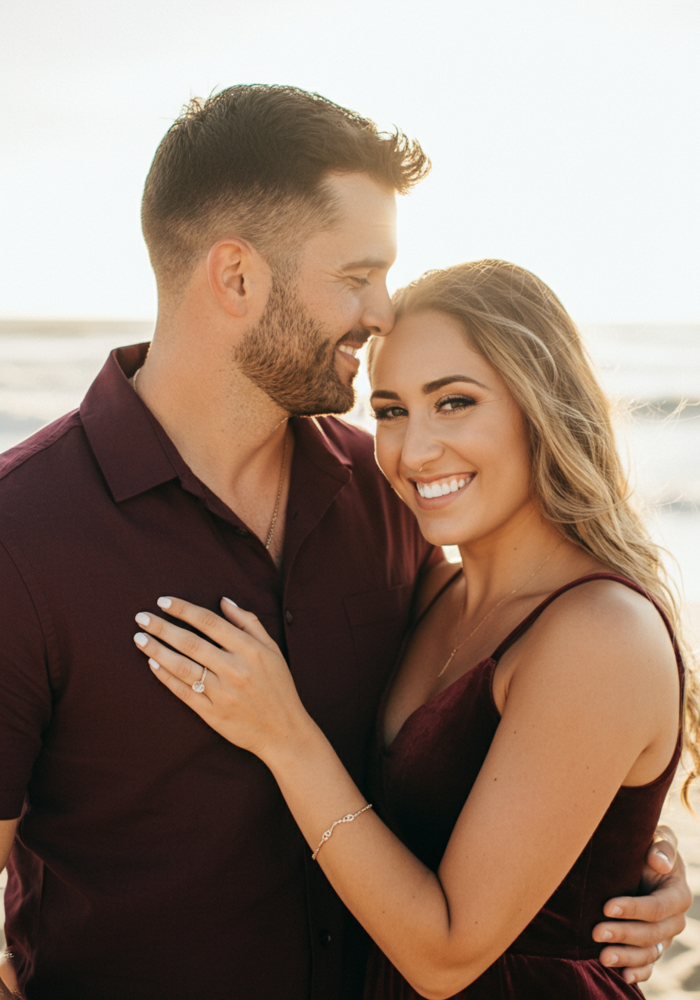

Complete the quiz to discover how you connect with your partner and feel most loved!
As you take this quiz, think specifically about your relationship with your partner:
Enjoy discovering your love language!
Your quiz results are not shared with anyone unless you choose to do so. The website doesn't save any responses; it is simply to help you understand your love language and relationships.
At the end of the quiz, you will be able to download your results or share them with your loved ones to enhance your relationship.